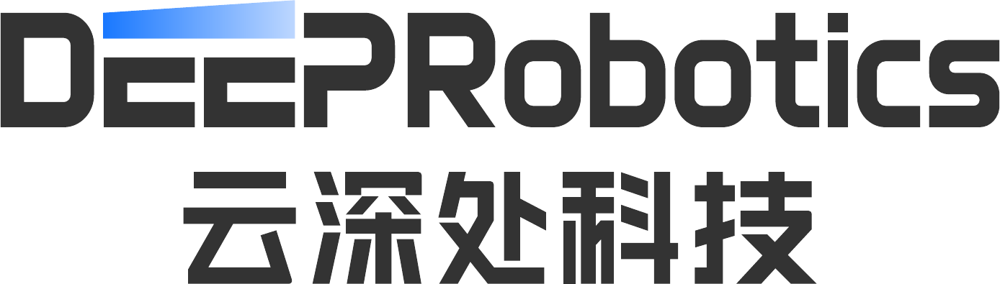
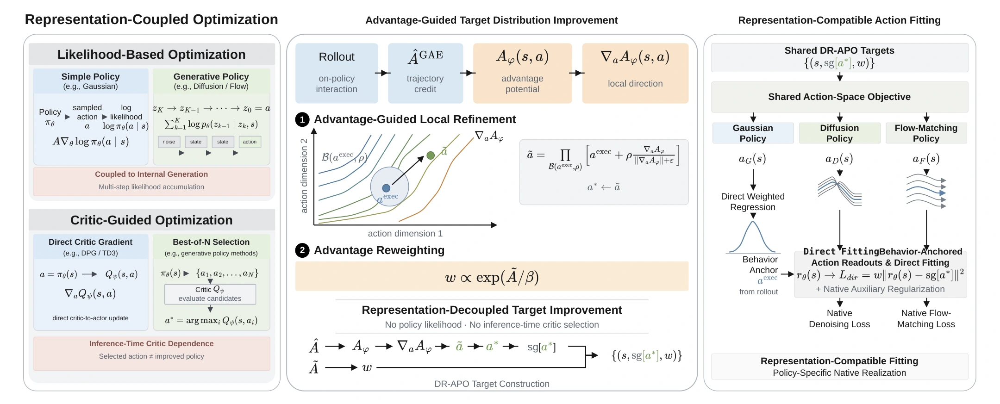
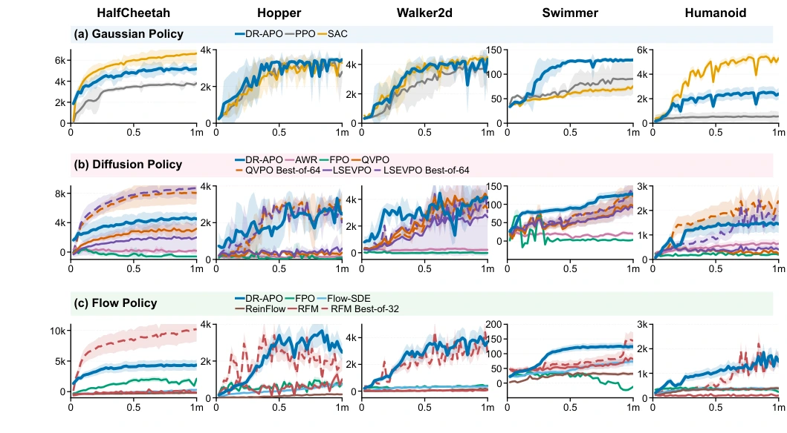

Advantage-Guided Target Improvement
Construct locally improved action targets using advantage information. Local action refinement and advantage reweighting provide complementary signals for policy improvement.

REINFORCEMENT LEARNING · EMBODIED NAVIGATION
1 DEEP Robotics, Hangzhou, China
2 Zhejiang University, Hangzhou, China
THE PAPER
Policy representations in reinforcement learning have expanded beyond Gaussian policies to diffusion and flow-matching based generative policies. However, existing RL methods remain representation-specific, lacking a unified optimization interface for emerging generative policies. In particular, extending likelihood-based objectives to multi-step generative policies couples optimization to their internal generation process, where accumulated likelihood ratios can weaken the update signal. Meanwhile, generative-policy-specific methods often rely on multi-candidate generation and critic-based selection, improving overall return while providing limited improvement to the policy itself. We introduce DR-APO (Decoupled-Representation Advantage-Guided Policy Optimization), which decouples policy improvement from policy representation through advantage-guided target improvement and representation-compatible direct action fitting, providing a shared optimization principle for Gaussian, diffusion, and flow policies. Across five MuJoCo-v5 tasks, DR-APO remains competitive with SAC for Gaussian policies and achieves the best aggregate policy-only performance for both diffusion and flow-matching policies. NavDP post-training improves the Success Rate (SR) from 70.33% to 89.55% in simulation and from 25% to 65% in real-world navigation. These results demonstrate a unified policy-improvement principle across Gaussian, diffusion, and flow policies, from continuous-control learning to embodied-policy post-training.
A SHARED OPTIMIZATION INTERFACE
Decouple how an action is improved from how a policy represents it.

Construct locally improved action targets using advantage information. Local action refinement and advantage reweighting provide complementary signals for policy improvement.
Fit the improved targets with a representation-compatible action readout. Gaussian policies use mean regression; diffusion and flow policies combine direct action fitting with native auxiliary training.
Gaussian · Diffusion · Flow
No likelihood-ratio actor updates or inference-time multi-candidate critic selection.
FROM SCRATCH · MUJOCO-v5
Five environments. Three policy families. One shared improvement rule.

Training: 1M steps · Five random seeds · Evaluation every 20k steps.
Final Return: 820k–1M steps. Normalized AUC@1M: 20k–1M steps.
Highest mean Final Return and AUC@1M across all five tasks: 10 of 10 comparisons.
| Method | HalfCheetah | Hopper | Walker2d | Swimmer | Humanoid | Avg. rank ↓ | ||||||
|---|---|---|---|---|---|---|---|---|---|---|---|---|
| Final | AUC | Final | AUC | Final | AUC | Final | AUC | Final | AUC | Final | AUC | |
| FPO | 1601.1 | 1311.8 | 736.2 | 619.0 | 390.5 | 314.3 | -11.2 | 18.4 | 323.9 | 359.3 | 3.20 | 2.60 |
| Flow-SDE | 215.7 | -65.0 | 677.9 | 405.2 | 334.3 | 263.0 | 70.1 | 47.5 | 375.3 | 334.8 | 3.00 | 3.20 |
| ReinFlow | -211.8 | -295.6 | 185.4 | 97.5 | 135.0 | 52.9 | 31.1 | 24.9 | 367.3 | 316.4 | 4.20 | 4.40 |
| RFM | 46.0 | -117.8 | 806.1 | 584.5 | 48.4 | 40.5 | 72.4 | 55.2 | 104.1 | 98.3 | 3.60 | 3.80 |
| DR-APO | 4299.2 | 3824.2 | 3016.4 | 2212.7 | 3650.0 | 2624.2 | 124.2 | 98.6 | 1535.4 | 1037.6 | 1.00 | 1.00 |
Highest mean Final Return on four tasks and AUC@1M on all five tasks: 9 of 10 comparisons.
| Method | HalfCheetah | Hopper | Walker2d | Swimmer | Humanoid | Avg. rank ↓ | ||||||
|---|---|---|---|---|---|---|---|---|---|---|---|---|
| Final | AUC | Final | AUC | Final | AUC | Final | AUC | Final | AUC | Final | AUC | |
| AWR | 135.5 | 205.7 | 144.9 | 143.9 | 220.2 | 228.1 | 19.2 | 17.3 | 640.6 | 509.2 | 3.60 | 3.60 |
| FPO | -587.5 | -344.9 | 40.7 | 119.4 | -2.0 | -0.2 | 2.8 | 11.1 | 201.9 | 197.1 | 5.00 | 5.00 |
| QVPO | 2981.3 | 2350.8 | 324.4 | 291.4 | 3913.3 | 2519.4 | 88.9 | 54.7 | 292.1 | 340.5 | 2.40 | 2.80 |
| LSEVPO | 1924.6 | 1462.1 | 497.8 | 396.9 | 2521.9 | 1627.0 | 83.0 | 54.9 | 439.4 | 395.8 | 2.80 | 2.60 |
| DR-APO | 4572.7 | 3840.5 | 2631.5 | 1955.6 | 3853.6 | 2902.6 | 124.9 | 93.7 | 1462.0 | 1185.0 | 1.20 | 1.00 |
Competitive with SAC in Final Return, with the best average AUC@1M rank.
| Method | HalfCheetah | Hopper | Walker2d | Swimmer | Humanoid | Avg. rank ↓ | ||||||
|---|---|---|---|---|---|---|---|---|---|---|---|---|
| Final | AUC | Final | AUC | Final | AUC | Final | AUC | Final | AUC | Final | AUC | |
| PPO | 3250.1 | 3057.5 | 3022.9 | 2484.4 | 3652.1 | 2547.9 | 68.4 | 53.4 | 541.0 | 493.2 | 3.00 | 2.80 |
| SAC | 6538.1 | 5621.8 | 3158.3 | 2420.7 | 4343.8 | 3181.8 | 69.8 | 58.0 | 5137.5 | 3951.5 | 1.40 | 1.80 |
| DR-APO | 5154.5 | 4574.1 | 3288.9 | 2692.3 | 4243.2 | 3202.6 | 128.7 | 106.5 | 2363.9 | 1945.0 | 1.60 | 1.40 |
Values transcribed directly from Table I. Rankings are within each policy family. Best-of-64/32 critic-selected variants appear in the original curves but are excluded from the policy-only table and rankings.
CITE THIS WORK
Preprint citation. Publication year and identifiers will be added when confirmed.
@unpublished{zhang_drapo,
title = {{DR-APO}: Decoupled-Representation Advantage-Guided Policy Optimization},
author = {Zhang, Runhua and Niu, Yingjie and Li, Chao},
note = {Preprint}
}